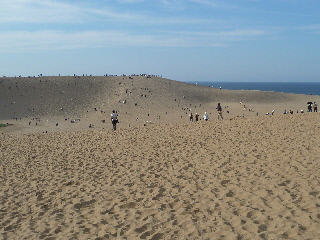
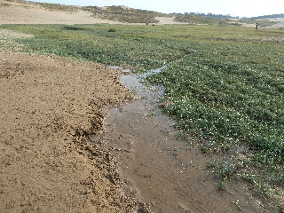
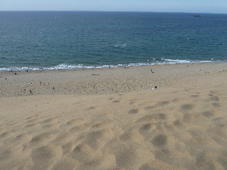
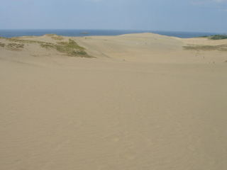

鳥取砂丘は疲れる。
2015/09/22
広いです。

海まで遠いなー。
とりあえず、目の前の山まで登ることにしました。

途中、オアシスがありました。
川かな？
砂丘の途中で水の流れは途切れてました。

砂丘の頂上から撮った写真です。
海まで歩いてる人も多くいましたが、今日は時間があんまりなかったのでここで引き換えしました。
交通渋滞があったりするので、もっと時間を掛けて遊べるプランを立てれば良かったです。
鳥取県鳥取市福部町湯山
2015/09/22
広いです。

海まで遠いなー。
とりあえず、目の前の山まで登ることにしました。

途中、オアシスがありました。
川かな？
砂丘の途中で水の流れは途切れてました。

砂丘の頂上から撮った写真です。
海まで歩いてる人も多くいましたが、今日は時間があんまりなかったのでここで引き換えしました。
交通渋滞があったりするので、もっと時間を掛けて遊べるプランを立てれば良かったです。
2009/09/21
秋のシルバーウィークってことで、観光地は大人気ですね。鳥取砂丘もお客さんが多く、道路が渋滞していました。
鳥取砂丘の駐車場付近が一番眺めがいいんでしょうけど、そこまでたどり着くにはそうとう時間がかかりそうだったので、こどもの国の駐車場付近から砂丘を見ました。

ちょっと草が生えてて砂漠っぽくはないんですが、人が少ないので景色は良いです。せっかくの砂丘も人だらけだったらしょうがないですよね。
少し海に向かって歩いたんですが、砂の山が続いてて、波打ち際が見れる感じがしなかったので途中で引き返して帰りました。鳥取砂丘は広いなと実感しました。
次はもっと空いた時期か時間に、鳥取砂丘の駐車場付近から見たいです。